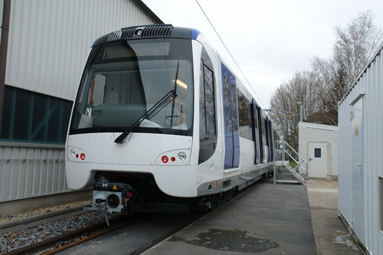

Nieuwe RSG3-rijtuigen in Bautzen en meer...
- zondag 30 november 2008 22:06
- Geschreven door Joachim
In Bautzen gaat de bouw van de nieuwe RSG3-rijtuigen voor de RandstadRail Erasmuslijn gestaag door. Rijtuig 5502 verliet onlangs de fabriek van Bombardier Transportation in Bautzen om beproefd te worden in de klimaatkamer in Wenen (Oostenrijk). Vorige week maakten instructeurs en mentoren van het metrobedrijf van de RET kennis met de nieuwe metrorijtuigen. Zij zullen de bestuurders van de RandstadRail Erasmuslijn met het nieuwe metromaterieel bekend moeten maken. Naar schatting komt het eerste nieuwe rijtuig aan het einde van deze maand of begin april aan in Rotterdam.
De mentoren en instructeurs maken kennis met rijtuig 5501.
Hetzelfde rijtuig, nu buiten op de draaischijf.
Zijaanzicht van de nieuwe 42-meter lange rijtuigen.
Een C-bak van de nieuwe serie RSG3 in aanbouw.
Diverse onderdelen worden geassembleerd. Op deze foto is te zien dat de kop nog niet gespoten is.
Twee rijtuigbakken in een later stadium. In de C-bak moeten de deuren nog geplaatst worden.
Links de B-bak van rijtuig 5504, rechts de C-bak van rijtuig 5503.

Een van de nieuwe rijtuigen op het buitenterrein, vermoedelijk rijtuig 5501.
Verplaatsen binnen het fabrieksterrein gaat middels een geavanceerde traverse.
Nadat de sporen aangesloten zijn, kan het rijtuig de traverse verlaten.
Spooruitbreiding emplacement Waalhaven
In verband met de spooruitbreiding van het emplacement Waalhaven, die momenteel in volle gang is, is het tussen 24 maart en 26 april niet meer mogelijk om het in- en uitrukproces te laten verlopen via de oostzijde van het emplacement. Dit proces wordt daarom verplaatst naar de westzijde. Er wordt dan ook gekeerd achter wisselcomplex Waalhaven II, wissel 65. Hiertoe wordt voor metrobestuurders tijdelijk een loopbordes geplaatst. Ook zal er in de voornoemde periode meer gebruik gemaakt worden van de opstelsporen ten zuiden van station Slinge.
Als ook de andere sporen aan de oostzijde vervangen worden, is in- en uitrukken via deze zijde niet meer mogelijk.

Op de voorgrond de stopmachine van Strukton, die de opstelsporen op niveau brengt.
5301
Metrorijtuig 5301 staat nog steeds in de Centrale Werkplaats Kleiweg voor een proefrevisie. De twee wagenbakken zijn binnen de werkplaats verplaatst middels de traverse. De werkzaamheden aan het rijtuig zijn vooralsnog onbekend. Wel is op de foto's te zien dat de automatische koppelingen gemodificeerd worden. Wat de modificatie precies inhoudt, is onbekend.
De gesplitste wagenbakken op de sporen 5 en 6.
Een gemodificeerde automatische koppeling.
Werkzaamheden station Maashaven
Terwijl de metrodienst gewoon doorgang vindt, wordt de onderzijde van het metroviaduct ter hoogte van station Maashaven volledig gerenoveerd. Eenzelfde renovatie vond al plaats bij station Rijnhaven. Het beton wordt onder handen genomen en er wordt een lichte kleur op aangebracht, die de sociale veiligheid ten goede komt.
Renovatiewerkzaamheden aan het viaduct van metrostation Maashaven.
Een reeds gerenoveerd en lichter gemaakt gedeelte.
Het metroverkeer ondervindt geen hinder van de werkzaamheden.
Problemen lijnspanning serie 5400 opgelost
Onlangs werden door oplettende metrobestuurders problemen met de lijnspanning tijdens bovenleidingbedrijf geconstateerd bij een aantal metrosneltrams uit de serie 5400 (5401-5418). Vooral op delen waar de bovenleiding hoger hing dan elders op het tracé, daalde de lijnspanning in een aantal gevallen van 750 naar 400 Volt. Na onderzoek van de afdeling Service & Onderhoud werden de pantografen aangepast, waarmee het probleem opgelost werd.